A message is 2 KB. How many bits is that, using 1 KB = 1000 bytes?
- That divides by 8 instead of multiplying.
- That forgets to multiply bytes by 8.
- 2,000 bytes × 8 bits per byte = 16,000 bits.
- That forgets the kilo (×1000).
Analog vs. digital, frequency and period, bit rate and bit interval, the three impairments (attenuation, distortion, noise), and the four delays: propagation, transmission, queuing and processing. This is the calculation-heavy deck: every formula here appears in Tutorial 3 (the solved Physical Layer Activity), and the worked answers are linked on each slide.
Every original slide is shown unchanged. Yellow marks on a slide point to a numbered note: hover or tap a mark to jump to its note, and hover a note to see its marks. Questions tagged Past exam appeared on a real paper; Prediction questions are likely angles, not confirmed. Pick an answer to each question: a wrong pick tells you why it is wrong, so you can try again.
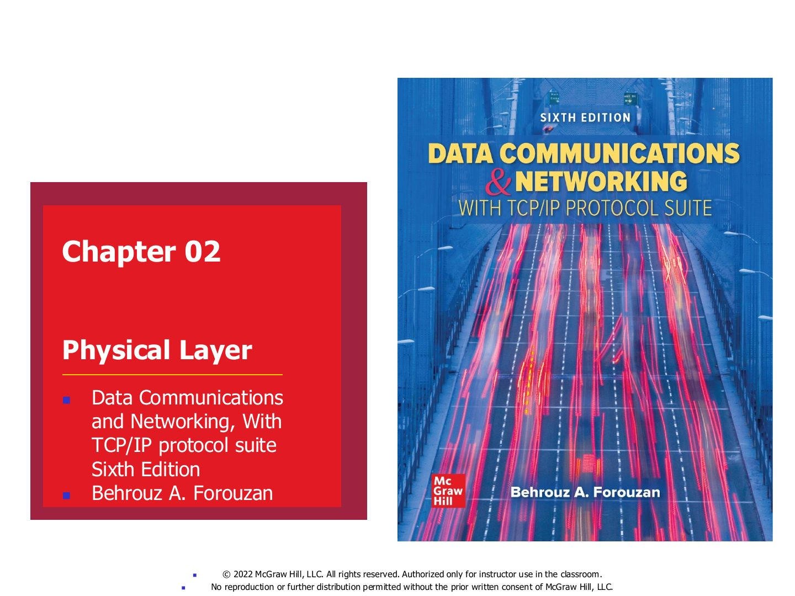
The deck goes from what a signal is, to the two kinds (analog and digital) and how to measure them (frequency and period for analog, bit rate and bit interval for digital), to what goes wrong on the way (attenuation, distortion, noise), to how long delivery takes (propagation, transmission, queuing, latency), and finishes with the bandwidth-delay product and wavelength.
This is the calculation deck, and Tutorial 3 is mostly calculations from it. Most marks are lost on units, not formulas: write the formula, convert everything to base units first (seconds, hertz, bits, metres, bits per second), then calculate, then convert the answer to the unit asked. Remember 1 byte = 8 bits, 1 km = 1000 m, 1 ms = 10⁻³ s, 1 µs = 10⁻⁶ s, and k = 10³, M = 10⁶, G = 10⁹.
Tip Formula sheet: f = 1/T · bit interval = 1/bit rate · propagation = distance / speed · transmission = size in bits / bandwidth · BDP = bandwidth × delay · wavelength = speed / f.
A message is 2 KB. How many bits is that, using 1 KB = 1000 bytes?
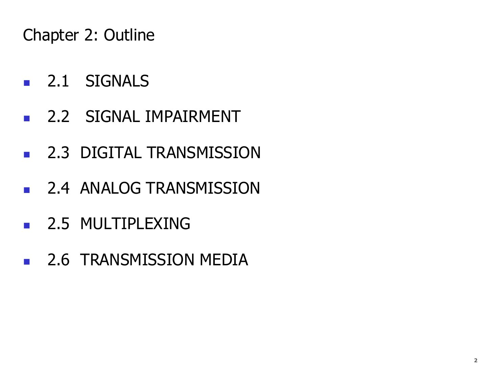
Chapter 2 has six sections. This part covers 2.1 signals and 2.2 signal impairment, plus the delay definitions (propagation, transmission, latency) and the bandwidth-delay product. Part 2 covers digital and analog transmission, multiplexing (Tutorial 3 asks a scenario on it) and transmission media.
Related question: Q3 · multiplexing several departments onto one link
You are setting up a network for a large office. Data from different departments must be sent over a single high-capacity link to the internet. Which physical layer concept from the slides would you apply here?
Multiplexing. It combines the data from several departments onto one high-capacity link, and at the destination a demultiplexer separates the combined data back into the individual streams.
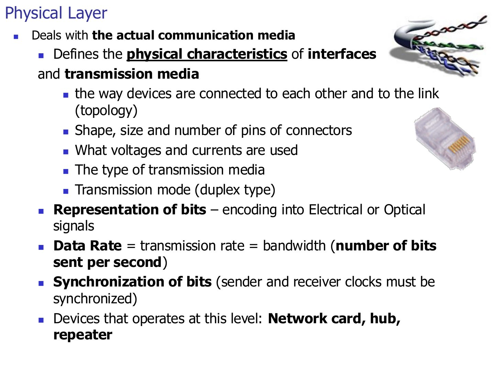
The physical layer defines the physical characteristics of the interfaces and the media: how devices are connected to each other and to the link (topology), the shape, size and number of pins on connectors, the voltages and currents, the type of medium (copper, fibre, wireless) and the transmission mode (simplex, half- or full-duplex). You saw this list in Chapter 1 Part 2; this chapter goes into detail.
Three more duties. Representation of bits: bits are encoded into electrical or optical signals. Data rate (transmission rate, also called bandwidth in this course): how many bits are sent per second. Synchronisation of bits: the sender’s and receiver’s clocks must match, so the receiver reads each bit at the right instant.
Devices that work at this layer: the network card (its signalling part), the hub and the repeater. They handle signals only; they never read an address.
Seen again Ch 1 Part 2, slide 26: First look at the physical layer
Which of these is NOT a physical layer duty?
Which device works at the physical layer?
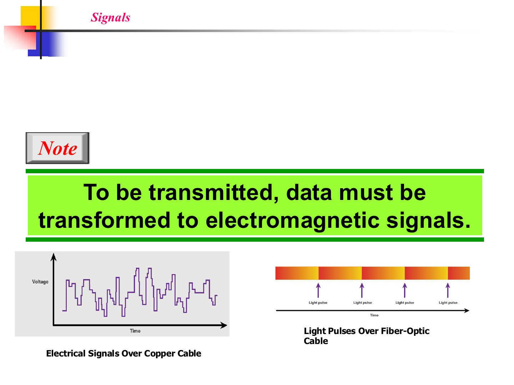
A cable can’t carry the number 1 or the letter A. Data has to be turned into a signal, a form of electromagnetic energy that can travel through the medium: a changing voltage on copper wire, pulses of light in a fibre-optic cable, or radio waves through the air. The left picture is an electrical signal on copper; the right one is light pulses in fibre. Turning data into a suitable signal, and back again at the receiver, is the physical layer’s core job.
To be transmitted, data must be transformed to electromagnetic signals.
In a fibre-optic cable, data travels as:
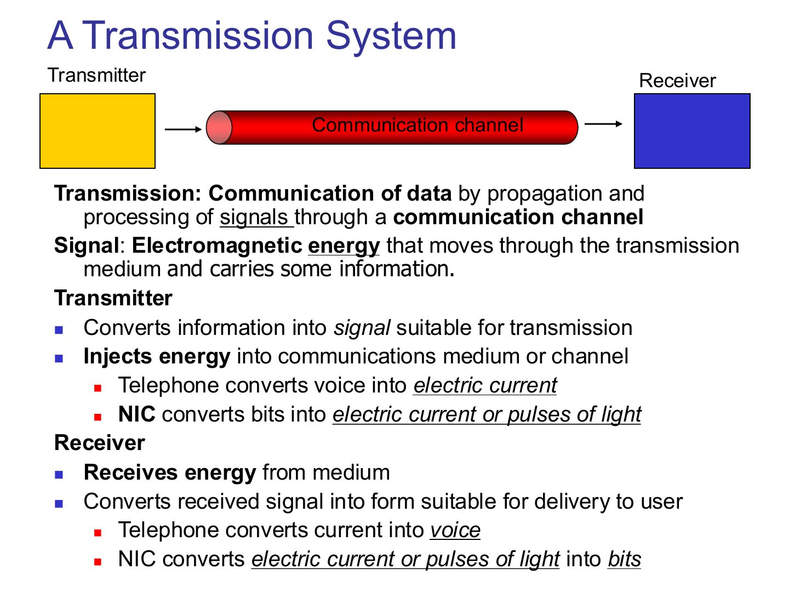
Transmission is communicating data by sending signals through a channel. A signal is electromagnetic energy that moves through the medium and carries information. The basic system has three parts: a transmitter, a communication channel and a receiver.
The transmitter turns information into a signal suited to the medium and injects energy into the channel: a telephone turns your voice into electric current, a NIC turns bits into electric current or light pulses. The receiver takes the energy from the medium and turns it back into a usable form: the phone turns current back into sound, the NIC turns current or light back into bits. A NIC is both a transmitter and a receiver.
What is a signal?
When a NIC receives light pulses and turns them into bits, it is acting as:
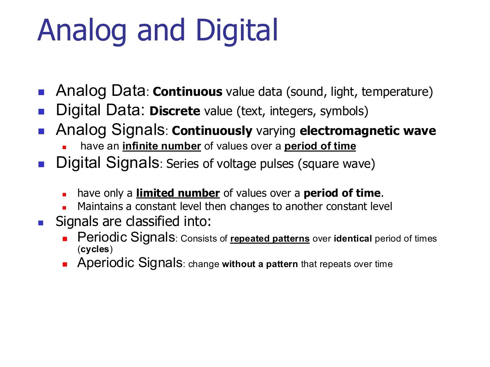
Analog data is continuous: it can take any value in a range, like the exact loudness of a sound or the temperature. Digital data is discrete: it takes separate values, like text characters or whole numbers. The same split applies to signals. An analog signal is a smoothly varying wave that can have an infinite number of values in a range over time. A digital signal is a series of voltage pulses (a square wave) with only a limited number of values: it stays at one constant level, then jumps to another.
Separately, a signal can be periodic, meaning it repeats the same pattern over identical time periods called cycles, or aperiodic, meaning it changes without a repeating pattern. These are two different classifications: analog/digital is about which values the signal can take, periodic/aperiodic is about whether its pattern repeats over time. So a signal can be periodic analog, aperiodic digital, and so on.
Trap Analog/digital is about the VALUES; periodic/aperiodic is about the PATTERN over time. They are separate classifications.
A signal that can have an infinite number of values in a range is:
A periodic signal repeats its pattern over identical periods called cycles.
Text and integers are examples of:
Whether a signal is analog or digital, and whether it is periodic or aperiodic, are two separate classifications.
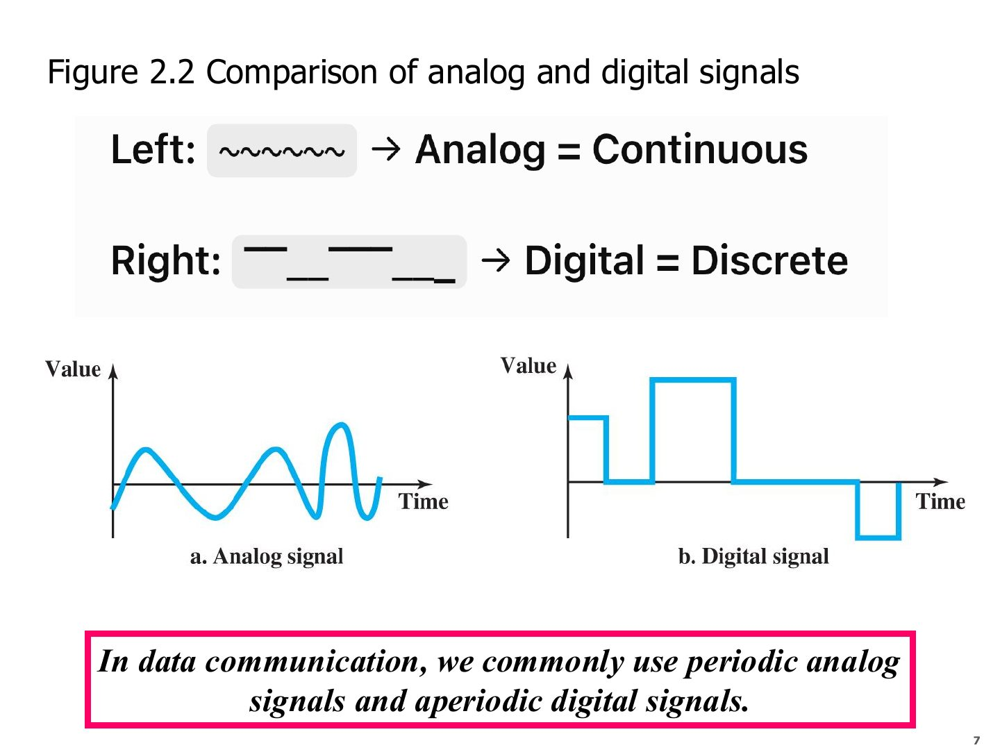
Picture (a) is analog: a smooth wave that passes through every value between its highs and lows. Picture (b) is digital: flat steps that jump between a few levels. The rule to remember from the next slide: in data communication we commonly use periodic analog signals (a repeating sine wave, used as a carrier, for example in radio) and aperiodic digital signals (the bit stream of real data doesn’t repeat, because the data itself doesn’t).
In data communication we commonly use:
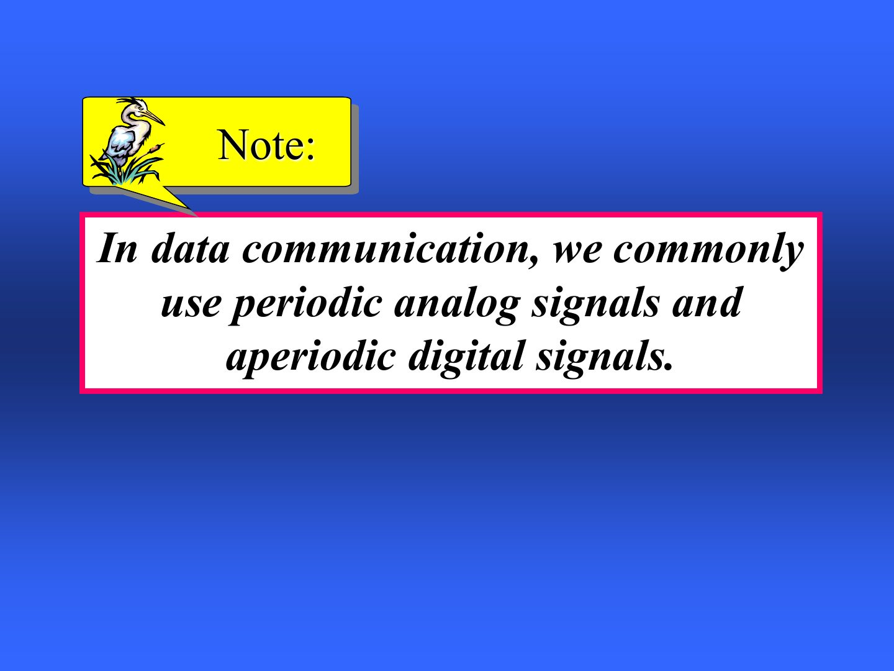
The slide repeats the rule on purpose because it is a classic MCQ: periodic analog and aperiodic digital. Why aperiodic digital? Because a digital signal carries real data such as 10110010…, which doesn’t repeat in a regular pattern. Why periodic analog? Because a pure repeating sine wave is easy to generate and can be changed (modulated) to carry information.
Why are digital signals in data communication usually aperiodic?
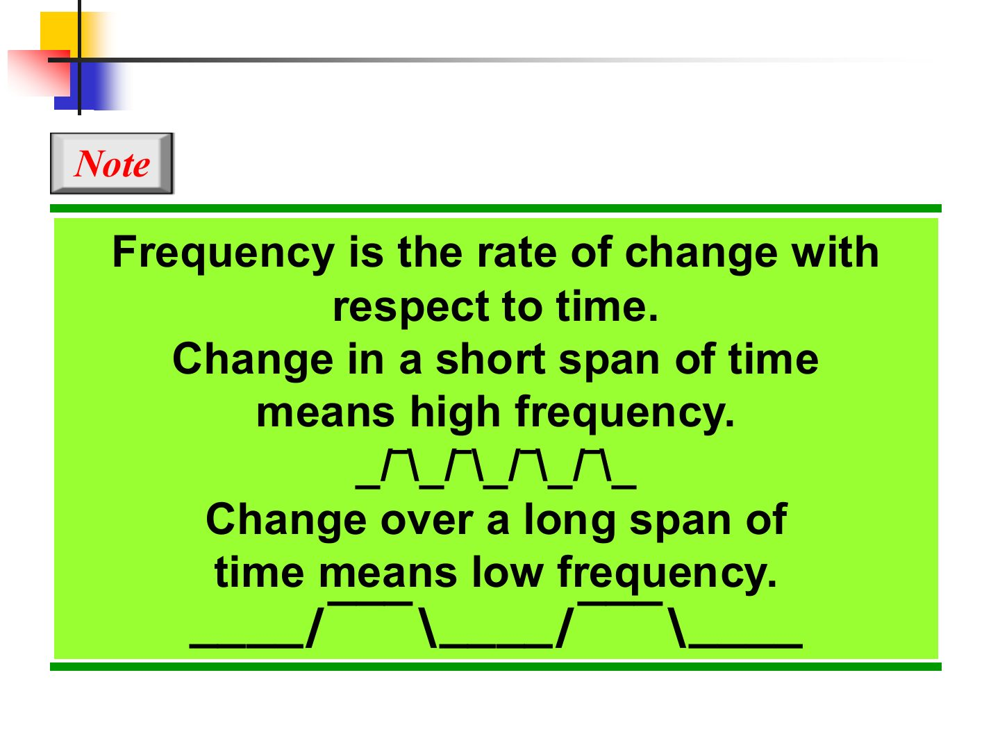
Frequency is how fast a signal changes over time: the number of complete cycles per second, measured in hertz (Hz). If the signal changes a lot in a short time, the frequency is high.
If the signal changes slowly, over a long time, the frequency is low. Two extremes: a signal that never changes at all has a frequency of zero, and a signal that jumps instantly from one level to another has (in theory) an infinite frequency.
A signal changes a lot in a very short time. Its frequency is:
A signal that never changes has a frequency of zero.
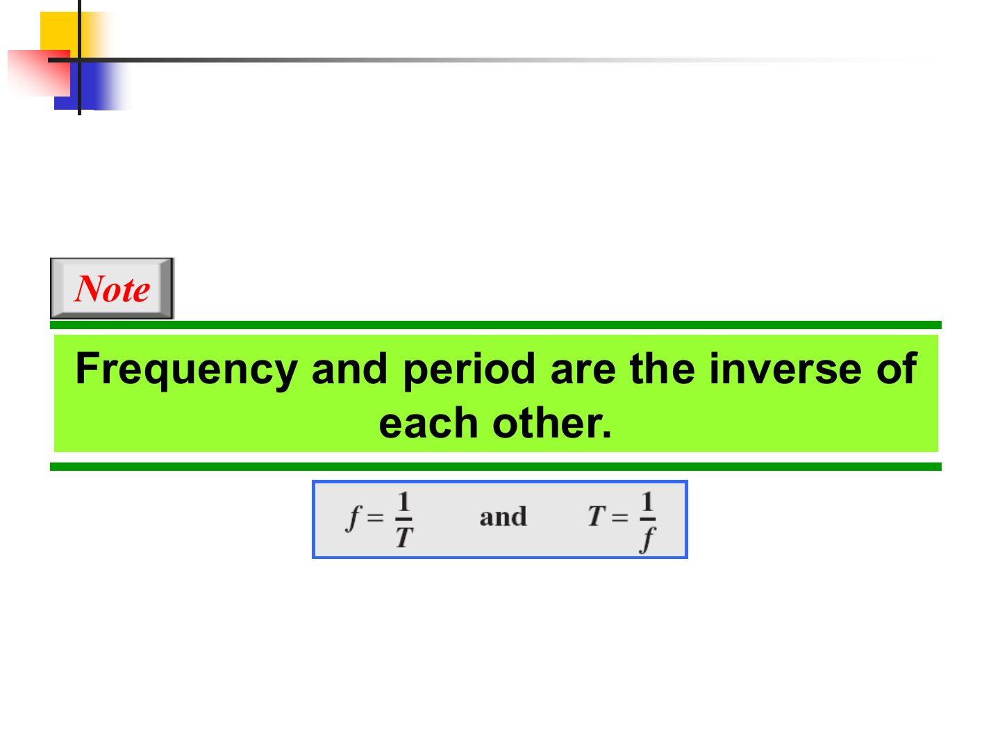
Frequency and period are inverses: f = 1/T and T = 1/f. The period T is the time one cycle takes, in seconds; the frequency f is the number of cycles per second, in hertz. If one cycle takes 0.5 s, then 2 cycles fit into a second, so f = 2 Hz. Tutorial 3, Question 5 asks exactly this: f = 5 kHz = 5,000 Hz, so T = 1/5,000 = 0.0002 s = 200 µs.
Memory trick Units pair up: s ↔ Hz, ms ↔ kHz, µs ↔ MHz, ns ↔ GHz.
Q5 · period of a 5 kHz signal
An analog signal has a frequency of 5 kHz. Explain what its period is and how frequency and period are mathematically related.
They are inverses: T = 1/f. f = 5 kHz = 5,000 Hz, so T = 1/5,000 = 0.0002 s = 200 µs.
An analog signal has a frequency of 2 kHz. Its period is:
Period is measured in seconds. Frequency is measured in:
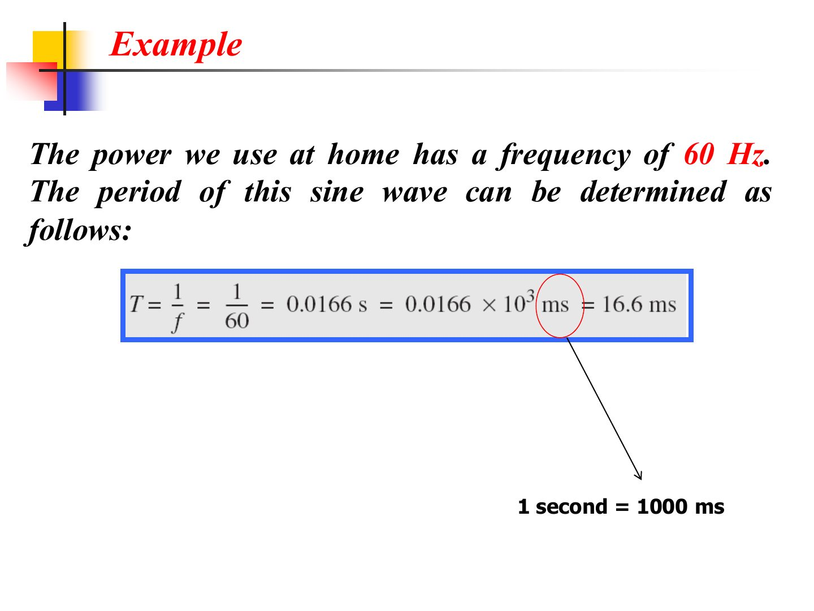
Worked example: home power is 60 Hz, so T = 1/60 = 0.0166 s. To convert seconds to milliseconds, multiply by 1000: 0.0166 × 1000 = 16.6 ms. So one cycle of mains power lasts about 16.6 ms. (In Saudi Arabia the mains frequency is also 60 Hz.)
A signal has a frequency of 50 Hz. Its period is:
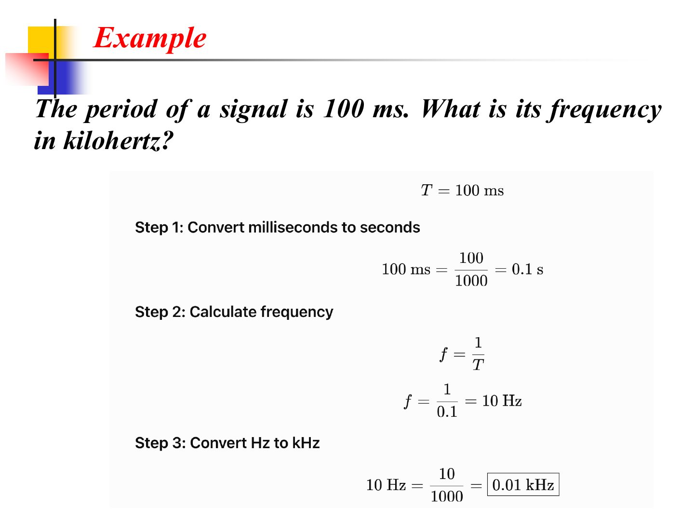
Going the other way: the period is 100 ms, and the question wants kHz. Step 1, convert to base units: 100 ms = 0.1 s. Step 2, use the formula: f = 1/0.1 = 10 Hz. Step 3, convert to the unit asked: 10 Hz = 10/1000 = 0.01 kHz. Always do these three steps in that order, because dividing 1 by 100 (forgetting to convert ms) gives an answer 1000 times too small.
A signal has a period of 4 ms. Its frequency is:
What is the first step when a period is given in ms and the frequency is wanted in kHz?
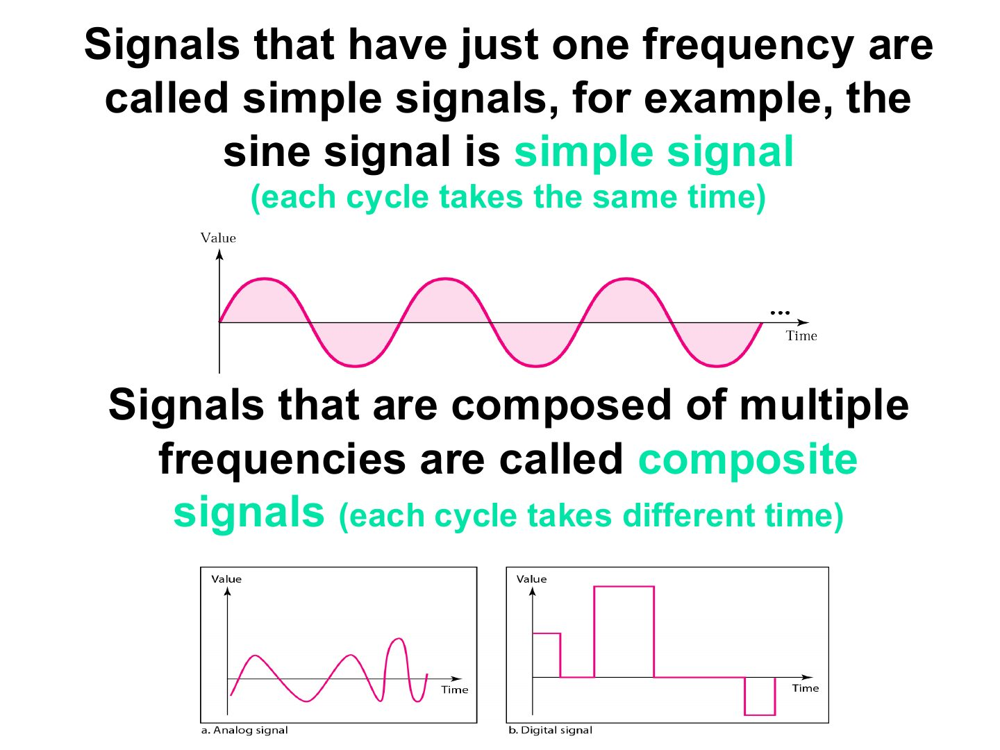
A simple signal is a single sine wave, so it has exactly one frequency: every cycle is identical and takes the same time. A composite signal is made of several sine waves with different frequencies (and possibly different amplitudes and phases) added together, so its cycles don’t all look the same. Real signals, such as voice or a digital bit stream, are composite. This is Tutorial 3, Question 8.
Q8 · simple vs. composite signal
What is the key difference between a simple signal and a composite signal, as described in the slides?
A simple signal is a single sine wave, so it has one frequency. A composite signal is made of several simple sine waves with different frequencies, amplitudes or phases combined together.
A signal made of several sine waves with different frequencies is:
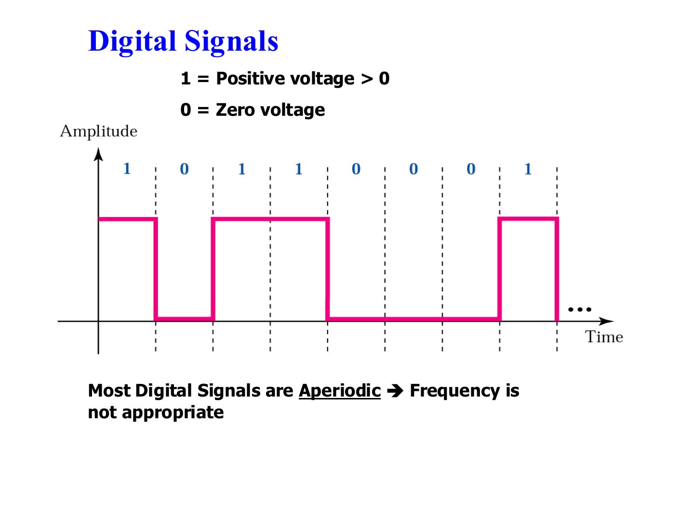
A digital signal represents bits as voltage levels: here 1 = a positive voltage and 0 = zero voltage. Most digital signals are aperiodic, because the data they carry doesn’t repeat, so frequency and period don’t describe them well. Instead we use bit rate (bits per second) and bit interval (the time one bit takes), defined on slide 16.
Why are frequency and period not used to describe most digital signals?
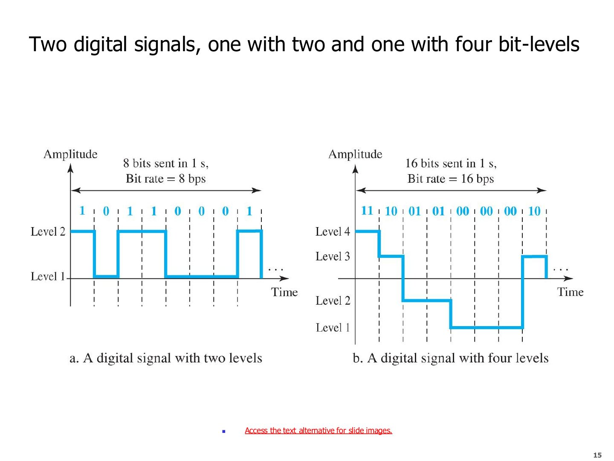
A digital signal can use more than two levels. With 2 levels, each level carries 1 bit (low = 0, high = 1), so 8 levels sent in one second carry 8 bits: 8 bps. With 4 levels, each level carries 2 bits (00, 01, 10, 11), so 8 levels in a second carry 16 bits: 16 bps. The rule: with L levels, each level carries log₂L bits. 8 levels carry 3 bits, 16 levels carry 4. More levels means more bits per second without changing how fast the signal changes level.
A digital signal has 8 levels. How many bits does each level carry?
A signal with 2 levels sends 8 levels per second (8 bps). A 4-level signal changing level just as fast sends:
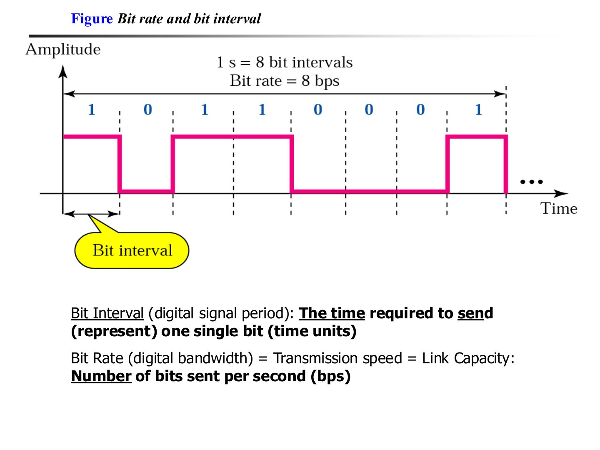
Two measures for digital signals. The bit interval is the time needed to send one bit, the digital version of the period. The bit rate is the number of bits sent per second (bps), the digital version of frequency. It is also called digital bandwidth, transmission speed or link capacity. They are inverses: bit rate = 1/bit interval. Tutorial 3, Question 1: bit interval = 50 µs = 0.00005 s, so bit rate = 1/0.00005 = 20,000 bps = 20 Kbps.
Q1 · bit rate from a 50 µs bit interval
A digital signal has a bit interval of 0.00005 seconds (50 µs). What is the bit rate (bandwidth) of this signal in Kbps?
Bit rate = 1/bit interval = 1/0.00005 = 20,000 bps = 20 Kbps.
A digital signal has a bit interval of 25 µs. Its bit rate is:
The time needed to send one bit is the:
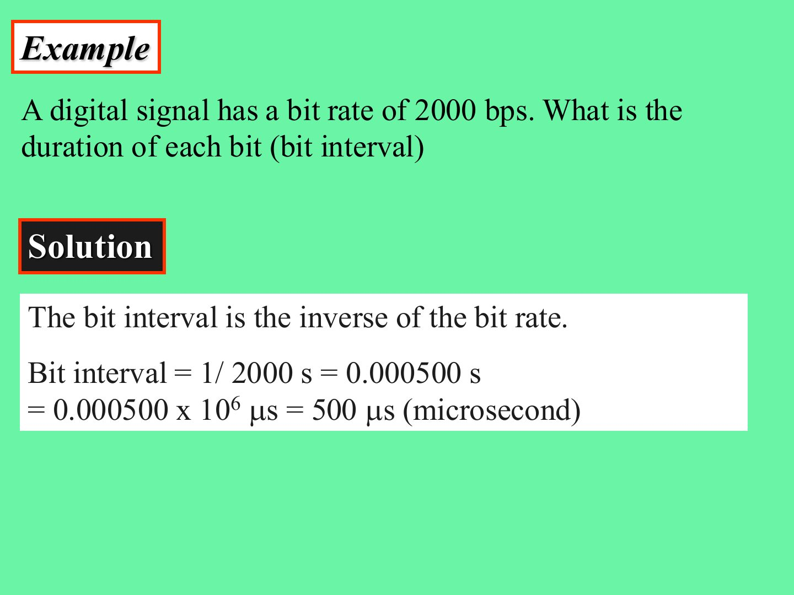
Worked example: bit rate = 2000 bps, so bit interval = 1/2000 = 0.0005 s. To convert seconds to microseconds, multiply by 10⁶: 0.0005 × 10⁶ = 500 µs. Sanity check: if each bit lasts half a millisecond, 2000 of them fill one second.
A signal has a bit rate of 4000 bps. Each bit lasts:
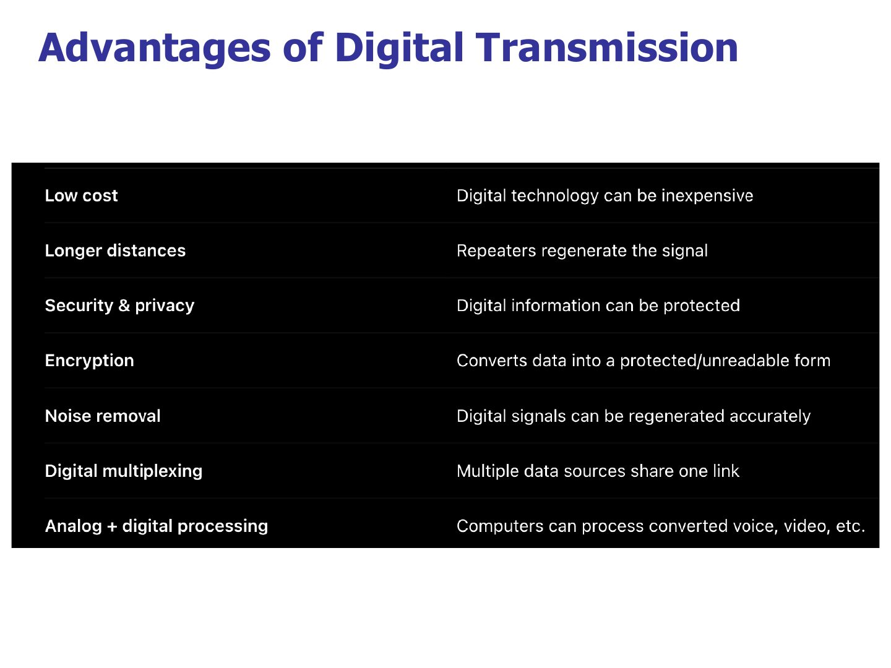
Why digital transmission is preferred: it is cheaper (digital chips are inexpensive), it can travel longer distances because repeaters regenerate a clean copy of the bits instead of boosting noise, it supports security and privacy through encryption, noise can be removed because the receiver only has to decide between a few levels, many signals can be combined by digital multiplexing, and both analog and digital data can be processed the same way once they are digital.
Related question: Q2 · what a repeater does
The slides mention that a “repeater” is a physical layer device. What is its primary function, and why is it necessary in digital transmission?
A repeater receives a weakened or distorted digital signal, regenerates it and sends a fresh copy onward. It is needed because signals lose strength and get distorted over long distances; it lets the digital signal travel farther without losing its original form.
Why can digital transmission cover longer distances?
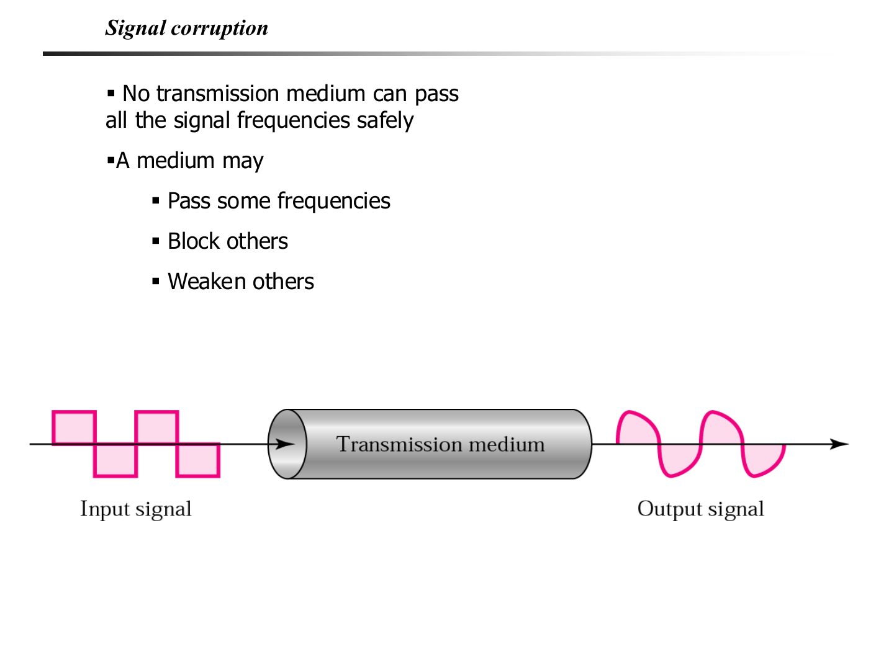
No medium is perfect. Each one passes some frequencies well, blocks others and weakens others. Because a real signal is composite (made of many frequencies), the medium treats its parts differently, so the signal that comes out is never exactly the signal that went in. The figure shows a sharp square wave coming out rounded. This is the reason impairments exist.
Why does a signal come out of a medium different from how it went in?
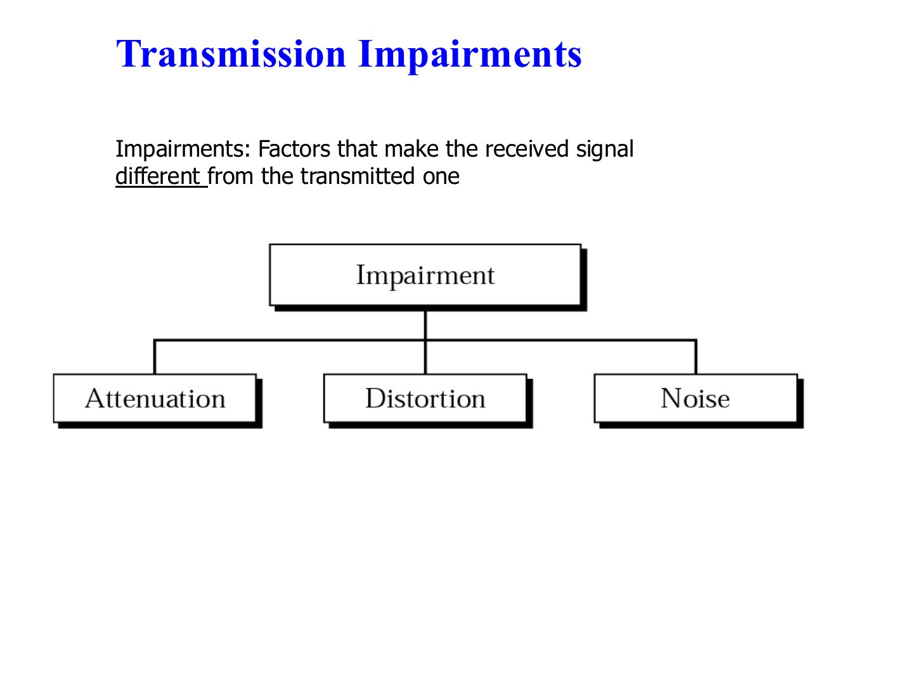
Impairments are the factors that make the received signal different from the transmitted one. There are three: attenuation (the signal gets weaker), distortion (the signal changes shape) and noise (unwanted signals get added). Learning what each one changes (strength, shape, or extra energy) is enough to identify it in any scenario.
Memory trick “ADN”: Attenuation (weaker), Distortion (reshaped), Noise (extra signal).
Which is NOT a transmission impairment?
Impairments are defined as factors that:
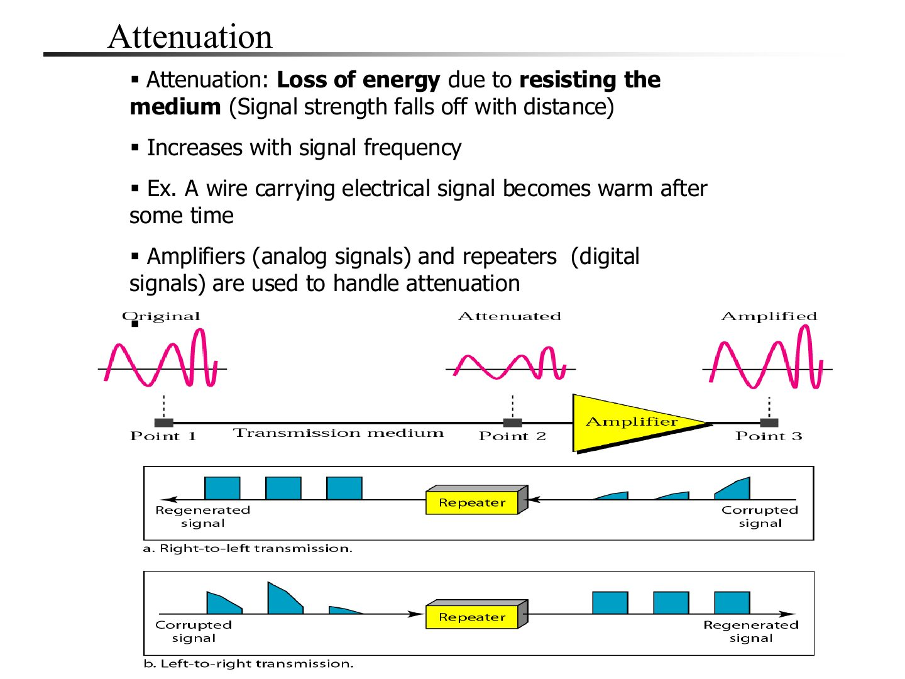
Attenuation is a loss of energy. As the signal travels, the medium resists it, and some of the energy is turned into heat (the slide’s example: a wire carrying a signal gets warm). So the signal gets weaker with distance. It also increases with frequency: higher-frequency signals lose strength faster, which is one reason high-speed links need shorter cables or better media.
The fix depends on the signal. Amplifiers are used for analog signals: they boost the signal, but they also boost any noise in it. Repeaters are used for digital signals: they read the weak signal, work out which bits it carried, and regenerate a clean new copy. Tutorial 3, Question 2 asks what a repeater does and why it is needed: it regenerates a weakened or distorted digital signal so the data can travel farther without losing its form.
Trap Amplifiers boost noise too; repeaters regenerate the original bits.
Q2 · repeater regenerates the weakened signal
Loss of signal energy due to the resistance of the medium is called:
What does a repeater do and why is it needed in digital transmission?
It receives a weakened or distorted digital signal, regenerates it and sends a clean copy on. Signals lose strength over distance (attenuation), so repeaters let digital data travel further without losing its form.
Attenuation increases as the signal frequency increases.
Which device handles attenuation for analog signals?
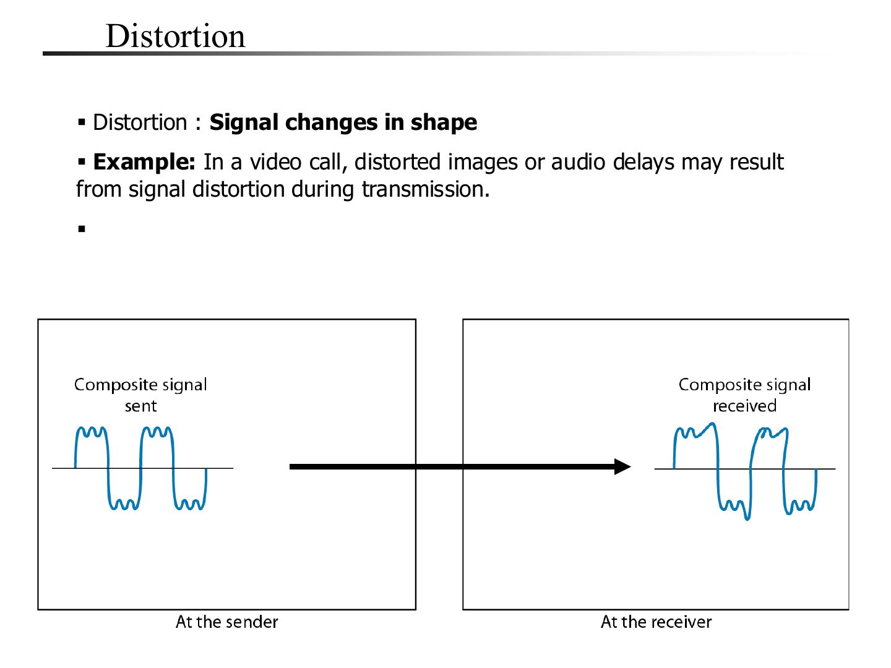
Distortion means the signal changes shape. It happens to composite signals because each frequency component travels through the medium at a slightly different speed, so the components arrive at slightly different times and no longer add up to the original shape. The slide’s example is a video call with distorted images or audio. The key word in a question is “shape”: weaker is attenuation, reshaped is distortion.
A composite signal arrives with a changed shape. This impairment is:
Why does distortion happen?
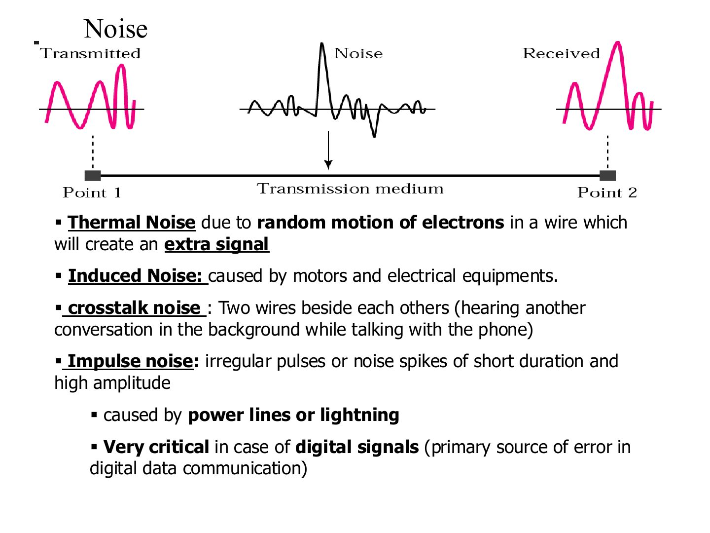
Noise is unwanted energy that gets added to the signal. Thermal noise comes from the random motion of electrons in the wire, which creates an extra signal that was never sent; it is always present. Induced noise comes from outside sources such as motors and electrical equipment (like a microwave or a large machine), which act as antennas sending interference into the cable. Tutorial 3, Question 9 is this case: errors caused by nearby electrical equipment are induced noise.
Crosstalk is the effect of one wire on another: two wires lying beside each other, and one picks up the signal of the other. It is like hearing another conversation in the background of your phone call (Tutorial 3, Question 6). Twisting the wire pairs, as in twisted-pair cable, reduces it.
Impulse noise is irregular, short spikes with high amplitude, caused by power lines or lightning. It is very critical for digital signals, and it is the primary source of errors in digital data communication, because a single spike can flip a whole run of bits.
Memory trick Crosstalk = “cross talk”: someone else’s conversation crossing into yours.
Q6 · background conversation = crosstalk
Q9 · nearby electrical equipment = induced noise
You are on a phone call and hear a faint conversation in the background from another call. What type of signal impairment is this, and under which broader category does it fall?
Crosstalk: a signal from one communication line interfering with another line. It falls under the broader category of noise.
You are designing a system to transmit digital data over a long distance. It has significant errors because of electrical equipment nearby. Which impairment is the primary source, and how might you reduce it?
Induced noise (electromagnetic interference), a kind of noise: nearby equipment generates unwanted signals that interfere with the transmission. Reduce it with shielded or twisted-pair cables, by moving cables away from the equipment, by using fibre-optic cable, and with noise filtering or error detection.
Which noise is the primary source of error in digital data communication?
Noise caused by the random motion of electrons in a wire is:
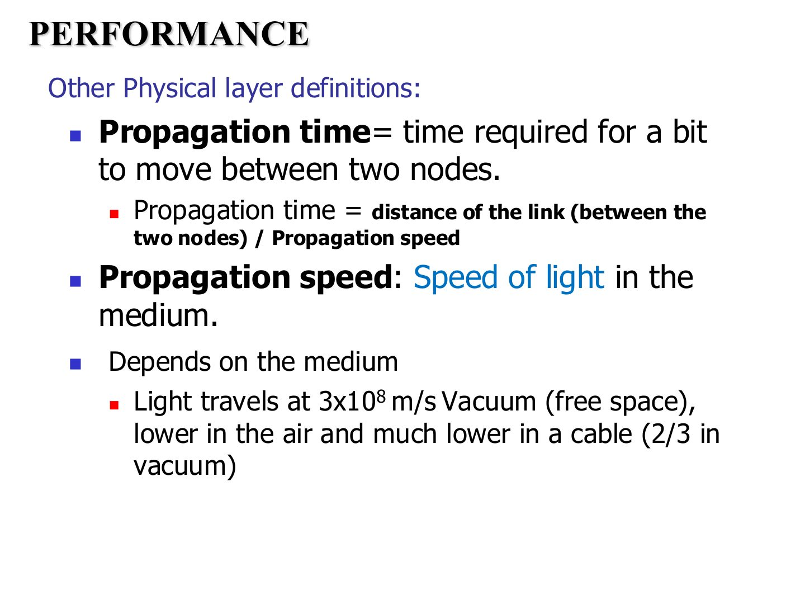
Propagation time is the time one bit needs to travel from one node to the other: propagation time = distance / propagation speed. It depends only on how far the bit goes and how fast signals move in the medium. It does not depend on the size of the message or the bandwidth.
The propagation speed is the speed of light in the medium: 3 × 10⁸ m/s in a vacuum, a little less in air, and much less in a cable, about 2/3 of that, so roughly 2 × 10⁸ m/s. Tutorial 3, Question 4: 2,000 km = 2,000,000 m, so 2,000,000 / (2 × 10⁸) = 0.01 s = 10 ms. Always convert km to m before dividing by m/s.
Trap Convert km to m before dividing by m/s.
Q4 · 2,000 km at 2 × 10⁸ m/s
A sender and receiver are 2,000 km apart. The signal propagates at 2.0 × 10⁸ m/s. What is the propagation time for a single bit?
2,000 km = 2,000,000 m. Propagation time = distance / speed = 2,000,000 / (2 × 10⁸) = 0.01 s = 10 ms.
Two nodes are 4,000 km apart and the signal travels at 2 × 10⁸ m/s. The propagation time is:
Doubling the size of a message doubles its propagation time.
Light travels in a cable at about:
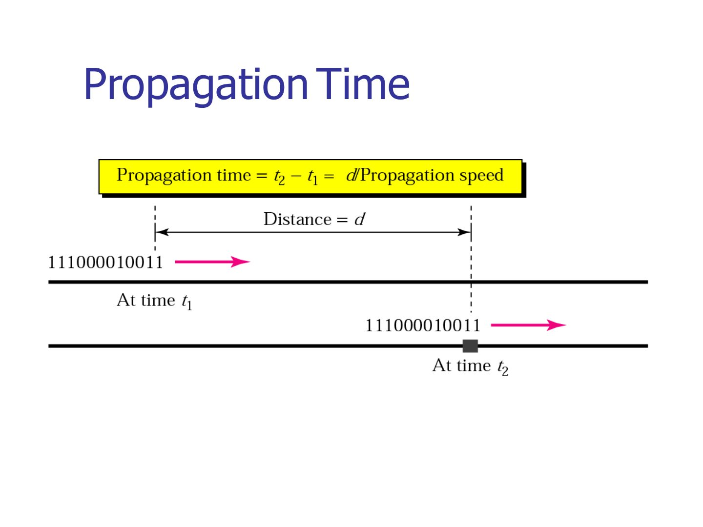
The figure defines propagation time visually: the bit leaves the sender at time t1, travels distance d, and arrives at time t2. Propagation time = t2 - t1 = d / propagation speed.
A bit leaves at t1 and arrives at t2. The propagation time is:
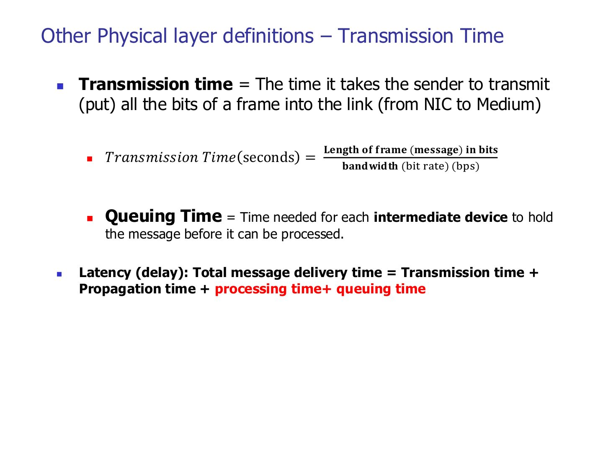
Transmission time is the time the sender needs to push all the bits of a frame onto the link, from the NIC into the medium: transmission time = message size in bits / bandwidth (bps). It depends on how big the message is and how fast the link is, not on distance. Tutorial 3, Question 7: 1 MB = 8 Mb (multiply bytes by 8), and 8 Mb / 1 Mbps = 8 s.
Queuing time is the time each intermediate device (router, switch) holds the message in a queue before it can process and forward it. It depends on how busy the device is, so it changes all the time. Latency (delay) is the total time to deliver a message = transmission time + propagation time + processing time + queuing time. A simple way to remember what each term depends on: propagation = how far, transmission = how big, queuing = how busy, processing = how much work each device does.
Memory trick Propagation = how FAR. Transmission = how BIG. Queuing = how BUSY.
Trap 1 MB = 8 Mb: multiply bytes by 8 first.
Q7 · 1 MB over 1 Mbps
A network has a bandwidth of 1 Mbps. You need to send a 1-megabyte (MB) file. Ignoring propagation delay, what is the transmission time?
1 MB = 8 Mb. Transmission time = size / bandwidth = 8 Mb / 1 Mbps = 8 s.
A 2 MB file is sent over a 4 Mbps link (ignore propagation). Transmission time?
Which delay depends on the size of the message?
List the four components of latency.
Propagation time + transmission time + queuing time + processing time.
A router holds a packet while it waits for other packets to be forwarded first. This is:
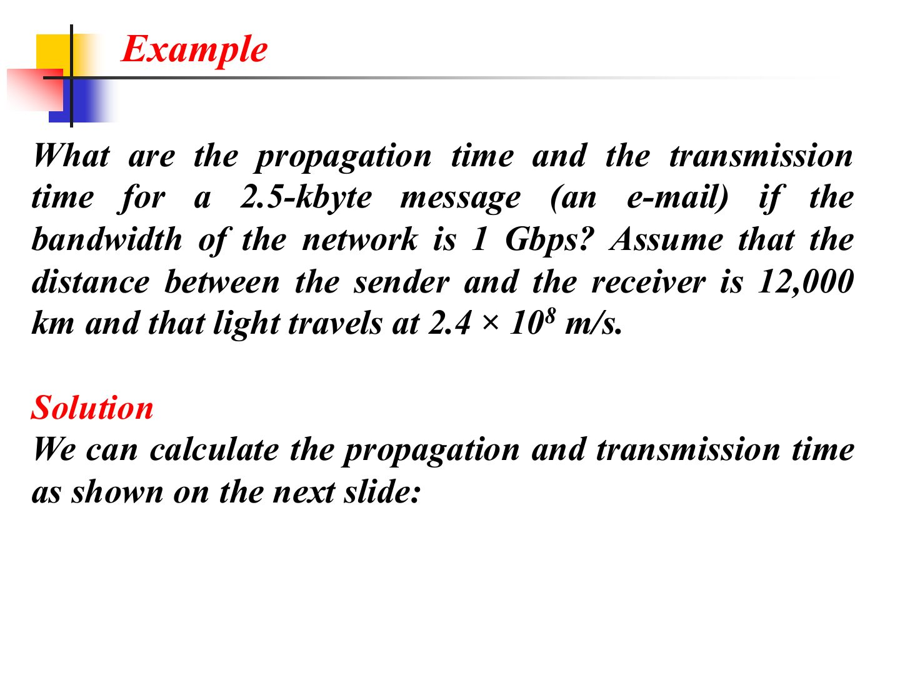
Before calculating, guess which delay will dominate: the message is small (2.5 KB) and the link is very fast (1 Gbps), but the distance is huge (12,000 km). Small message on a fast link means a tiny transmission time; long distance means a noticeable propagation time. The next slide confirms it.
A small message is sent over a very fast link across 12,000 km. Before calculating, which delay should you expect to dominate?
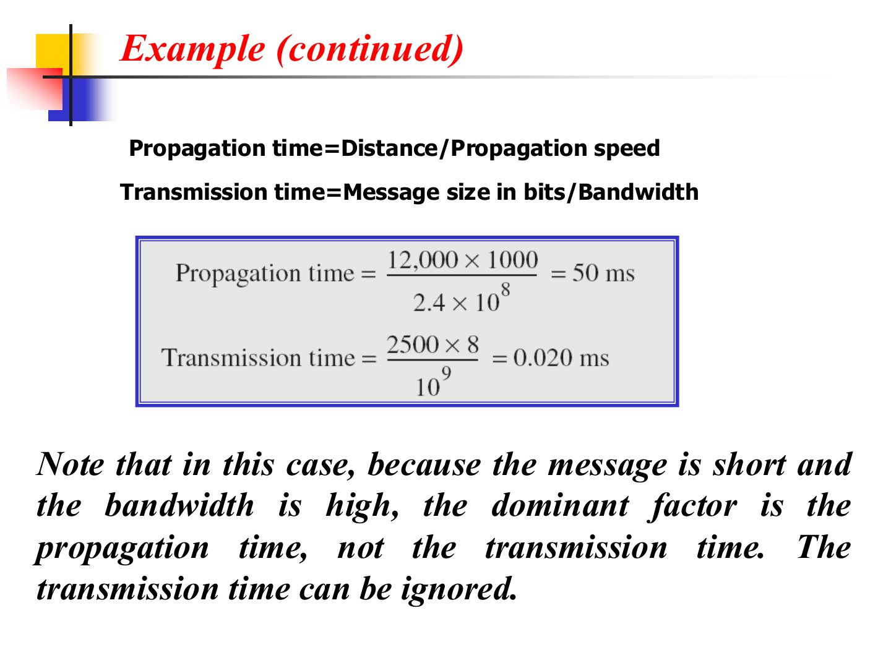
Propagation time = 12,000 km = 12,000 × 1000 m = 1.2 × 10⁷ m, divided by 2.4 × 10⁸ m/s = 0.05 s = 50 ms. Transmission time = 2.5 KB = 2500 × 8 = 20,000 bits, divided by 10⁹ bps = 0.00002 s = 0.020 ms. Propagation is 2,500 times bigger, so for a short message on a high-bandwidth link, propagation dominates and transmission can be ignored.
For a short e-mail on a 1 Gbps link across 12,000 km, the transmission time dominates.
What is the transmission time of a 2.5 KB message on a 1 Gbps link?
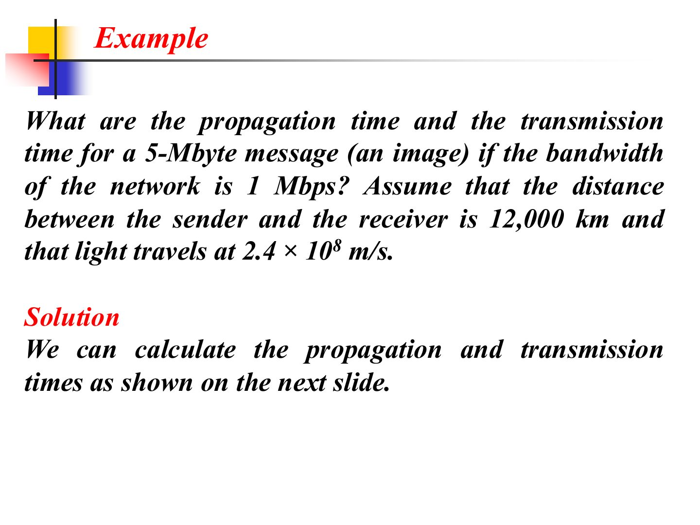
Same distance and speed as before, but now a large message (5 MB) on a slow link (1 Mbps). The propagation time will be the same 50 ms, because distance hasn’t changed. Guess before you look: a big message on a slow link should take a long time to push onto the wire.
In the 5 MB example, what is the propagation time over 12,000 km at 2.4 × 10⁸ m/s?
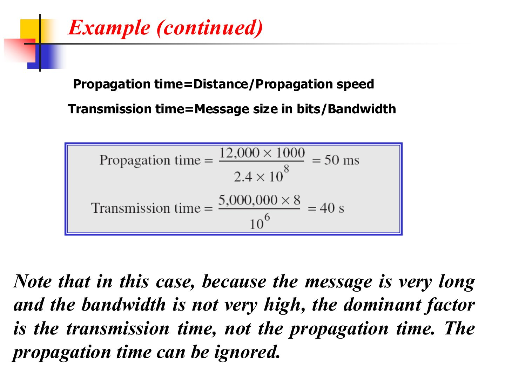
Propagation is unchanged: 50 ms. Transmission = 5 MB = 5,000,000 × 8 = 40,000,000 bits, divided by 10⁶ bps = 40 s. Now transmission is 800 times bigger, so for a long message on a low-bandwidth link, transmission dominates and propagation can be ignored. Comparing slides 28 and 30 is the point: which delay matters depends on message size and bandwidth, not only on distance.
A 5 MB image is sent on a 1 Mbps link over 12,000 km (2.4 × 10⁸ m/s). Which delay dominates?
Compare the two examples (2.5 KB on 1 Gbps, and 5 MB on 1 Mbps, both over 12,000 km). What do they show?
Propagation is 50 ms in both, because the distance is the same. Transmission is 0.02 ms for the small message on the fast link (propagation dominates), but 40 s for the large message on the slow link (transmission dominates). Which delay matters depends on message size and bandwidth.
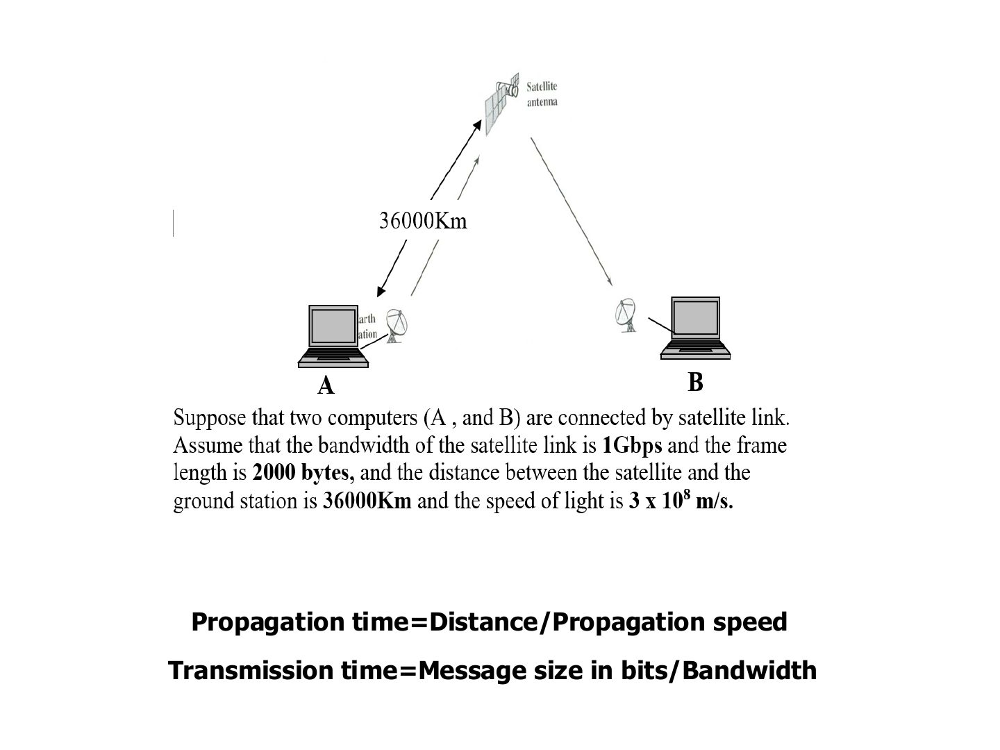
A satellite link: A sends up to a satellite 36,000 km above, and the satellite sends down to B, another 36,000 km. So the total distance from A to B is 72,000 km = 7.2 × 10⁷ m. Propagation time = 7.2 × 10⁷ / (3 × 10⁸) = 0.24 s (each leg alone is 0.12 s). Signals in space travel at the vacuum speed of light, 3 × 10⁸ m/s.
Transmission time = 2000 bytes = 16,000 bits, divided by 10⁹ bps = 0.000016 s = 16 µs. Propagation (240,000 µs) is 15,000 times larger. This is why satellite links feel slow for interactive use, like calls and games, even when their bandwidth is high: the delay comes from distance, and more bandwidth can’t reduce it.
In the satellite example (36,000 km up, 36,000 km down, 3 × 10⁸ m/s), the propagation time from A to B is:
In the satellite example, the transmission time of a 2000-byte frame at 1 Gbps is:
Increasing the bandwidth of a satellite link reduces its propagation time.
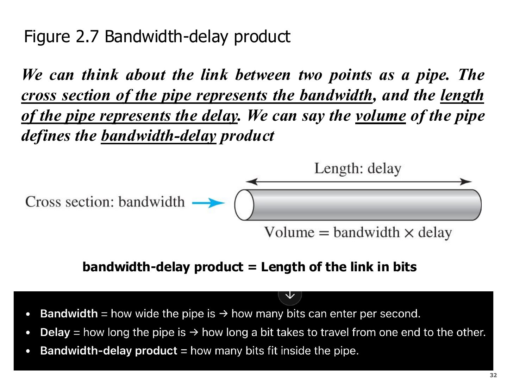
Think of the link as a pipe. Its cross-section (how wide it is) is the bandwidth: how many bits can enter per second. Its length is the delay: how long a bit takes to get from one end to the other. Its volume, bandwidth × delay, is the bandwidth-delay product: the number of bits that fit inside the link at once, before the first one arrives. Tutorial 3, Question 10: 5 bps × 5 s = 25 bits. A 10 Mbps link with a 2 ms delay holds 10⁷ × 0.002 = 20,000 bits. This matters later because a sender should keep that many bits in flight to use the link fully.
Q10 · 5 bps × 5 s
A link has a bandwidth of 5 bps and a delay of 5 seconds. (a) What is its bandwidth-delay product? (b) If a sender transmits for 5 seconds, how many bits are “in the pipe”?
(a) Bandwidth × delay = 5 × 5 = 25 bits. (b) In 5 seconds the sender transmits 5 bps × 5 s = 25 bits, all in transit on the link.
A 10 Mbps link has a 2 ms delay. How many bits fill the link?
In the pipe picture, what does the cross-section represent?
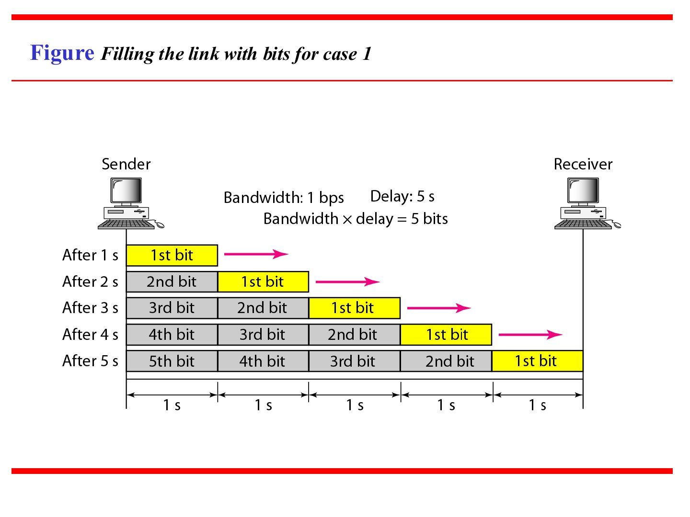
Case 1: bandwidth 1 bps, delay 5 s. The sender puts one bit on the link each second, and each bit takes 5 s to arrive. When the first bit reaches the receiver, the sender has sent 5 bits, so 5 bits are in the link: 1 × 5 = 5.
Bandwidth 1 bps, delay 5 s. How many bits are in the link when the first bit arrives?
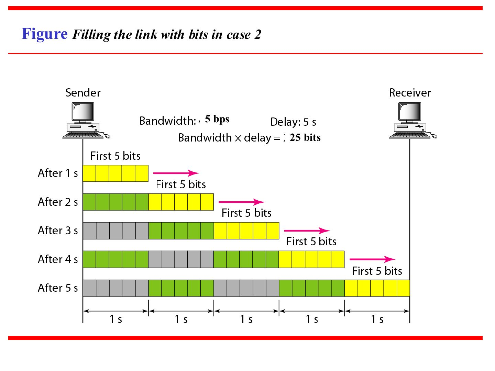
Case 2: bandwidth 5 bps, same 5 s delay. Now 5 bits enter every second, so after 5 s the link holds 25 bits: 5 × 5 = 25. These are the Tutorial 3 numbers. Comparing the two cases: the same pipe length, but five times wider, holds five times more bits.
Q10 · bits in the pipe after 5 s
Keeping the delay at 5 s and raising the bandwidth from 1 to 5 bps changes the bits in the link from 5 to:
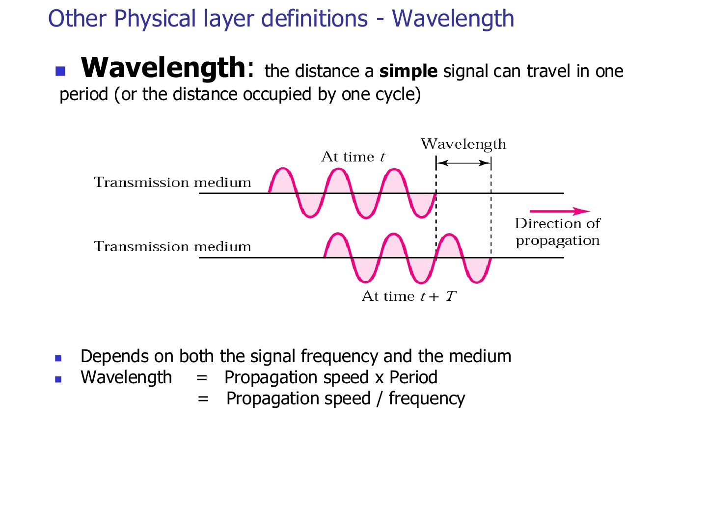
Wavelength is the distance a simple signal travels in one period, or the distance one cycle occupies in the medium. It depends on the frequency and on the medium (through its propagation speed): wavelength = propagation speed × period = propagation speed / frequency. Example: a 1 MHz signal at 2 × 10⁸ m/s has a wavelength of 2 × 10⁸ / 10⁶ = 200 m. Higher frequency means shorter wavelength.
A 1 MHz signal travels at 2 × 10⁸ m/s. Its wavelength is:
Wavelength depends on:
If the frequency of a signal doubles in the same medium, its wavelength halves.